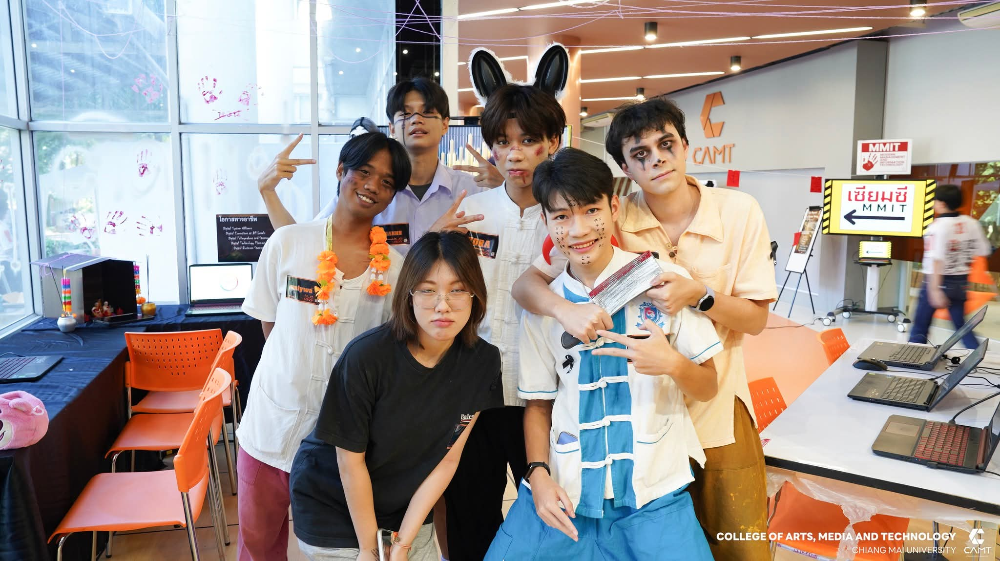

LeadCAMT Open House — DII Year President
College of Arts, Media and Technology, Chiang Mai University
13 November 2025
Served as President of the DII year cohort, leading the team in organising and presenting at the CAMT Open House — coordinating booth setup, delegating roles, and representing the major to prospective students and visitors.